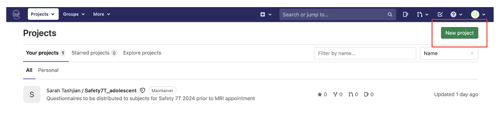
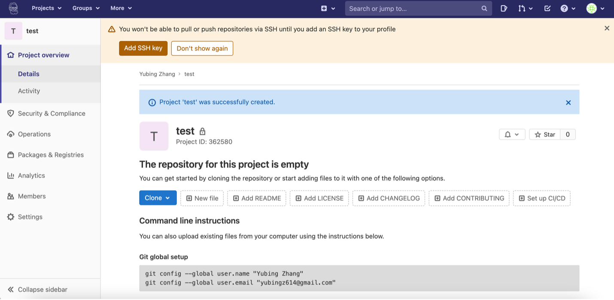
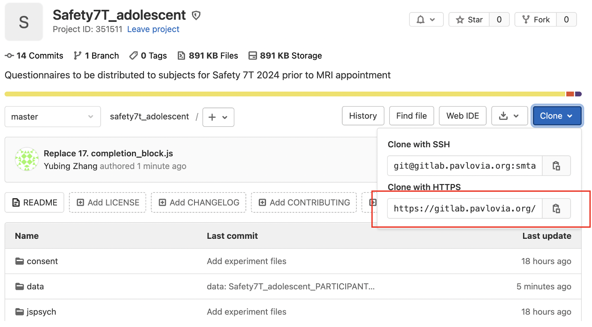
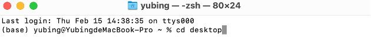
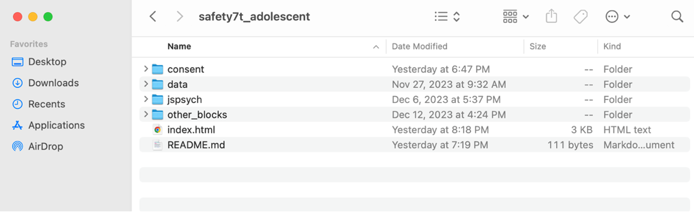
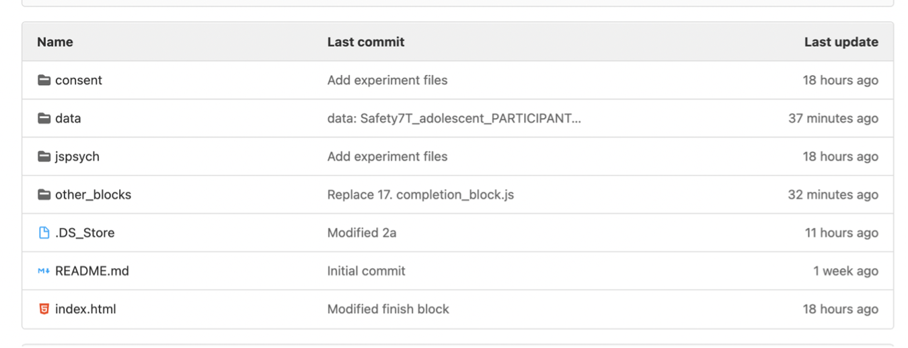
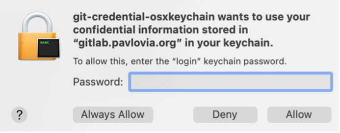
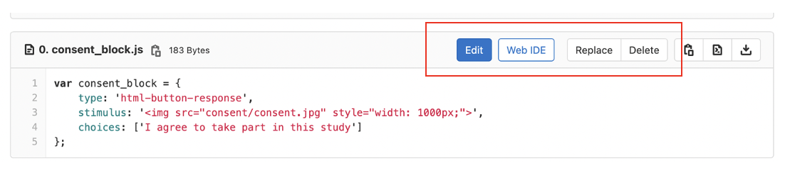
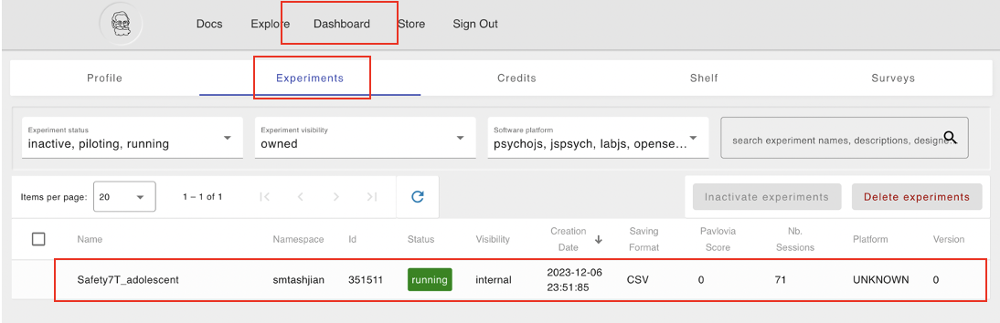
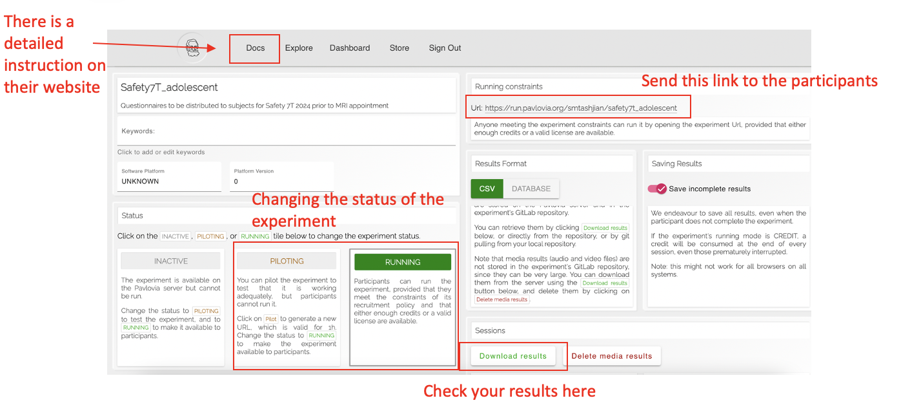

Pushing Questionnaires to Pavlovia#
If you haven’t used GitLab or GitHub before, the basic idea is to clone an empty project folder from the server to your local device, add files or make changes on your computer, and then push those changes back to the server.
Creating a Project#
After creating a Pavlovia account, go to GitLab Pavlovia. Click New Project in the top right corner and then Create Blank Project.

You should see something like this:

You can also share the project through settings in Memebers.

Important
Note that either credits or a Pavlovia license is required to run the experiments. Check with your project leader to see if a lab account is available.
Cloning the Project#
Cloning an Empty Folder to the Local Device
On the Pavlovia project page, click Clone in the top right corner and copy the Clone with HTTPS link.

Install Git onto your local device.
In the terminal, navigate to the directory where you would like the project folder to be cloned (e.g., your Desktop).

Then run the following command:
git clone <YOUR_PAVLOVIA_LINK>
A new folder named after your project will be created on your computer.
Upload Files to GitLab
Copy and paste all relevant files into this folder:

In the terminal, run the following command:
cd /path/to/YOUR_CLONED_FOLDER # Navigate to the cloned folder
git add . # Stage all files
git commit -m "Add experiment files" # Commit with a message
git push origin master # Push all commits to the server
You should then be able to see the files on the Gitlab project page:

Important
If prompted for a password, this is likely your local device password. This step may vary depending on your system configuration.

Making Changes#
Via Code
To update your project after making changes to the cloned folder, run the following commands:
git pull # Pull latest files from the server
git status # Check what has been changed locally
git add . # Stage all modified files
git commit -m "xxx modified" # Commit with a message
git push origin master # Push all commits to the server
Via Webpage
You can also edit files directly or replace them by uploading new ones on the GitLab project page:

Important
When using the first method, always pull the latest version from the server before making changes, especially when collaborating with others on the same project.
Running Your Project on Pavlovia#
You should also be able to see your project on Pavlovia by clicking Dashboard and then Experiments:

You can now pilot or run your experiment by changing the experiment status!
